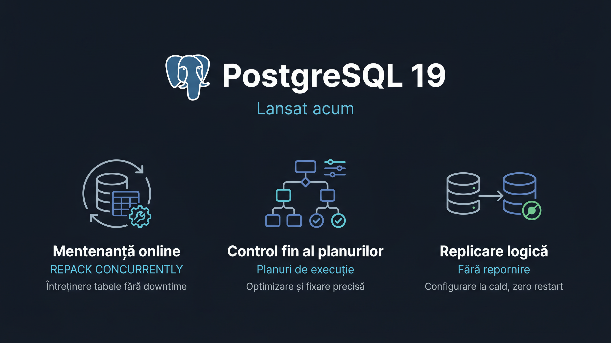

PostgreSQL 19 a fost lansat: Mentenanță online a tabelelor (REPACK CONCURRENTLY), control fin al planurilor de execuție și replicare logică fără repornire

Grupul global de dezvoltare PostgreSQL a anunțat disponibilitatea versiunii majore PostgreSQL 19, o actualizare de referință care elimină blocajele tradiționale la compactarea tabelelor în producție, introduce extensii native pentru stabilizarea planurilor de interogare, accelerează operațiunile Autovacuum și I/O asincron și simplifică replicarea logică.
1. Mentenanță online (REPACK CONCURRENTLY) și optimizarea interogărilor
Reorganizarea tabelelor fără blocare (
REPACK): Noua comandăREPACKrecuperează spațiul neutilizat de pe disc și reorganizează datele din tabele. Prin opțiuneaREPACK (CONCURRENTLY), administratorii pot executa această operațiune online, fără a bloca citirile sau scrierile — eliminând nevoia blocajelor exclusive impuse anterior deVACUUM FULLșiCLUSTER.Control asupra Query Planner-ului (
pg_plan_adviceșipg_stash_advice): Noua extensiepg_plan_advicele oferă administratorilor un control granular asupra planurilor de execuție alese de optimizator, iar extensia complementarăpg_stash_advicepoate stoca aceste recomandări și le poate aplica automat interogărilor corespunzătoare.Autovacuum paralel și interogări mai rapide: Procesul Autovacuum poate procesa acum indecșii folosind workeri paraleli, utilizează un nou mecanism de punctaj pentru prioritizarea tabelelor, iar interogările obișnuite pot marca automat paginile ca fiind complet vizibile (all-visible), reducând efortul operațiunilor vacuum ulterioare. De asemenea, verificările constrângerilor de chei străine (foreign keys) sunt de aproape două ori mai rapide la inserările în masă (bulk inserts), iar optimizatorul poate converti anumite condiții
NOT INîn anti-join-uri eficiente și poate executa agregările înaintea operațiunilor join.Scalare dinamică a subsistemului Async I/O: Introdus în PostgreSQL 18, subsistemul I/O asincron își ajustează acum automat numărul de workeri I/O în funcție de sarcina de lucru curentă.
2. Replicare logică îmbunătățită și noi facilități SQL
Replicare logică fără repornirea serverului: PostgreSQL 19 activează automat nivelul necesar de jurnalizare WAL la crearea primului slot de replicare logică, eliminând repornirea serverului impusă anterior în configurațiile care foloseau nivelul
replica. În plus, este suportată replicarea logică a valorilor secvențelor (sequences), alături de opțiuni mai flexibile pentru publicații și abonamente.Consistență Read-Your-Writes (
WAIT FOR LSN): Aplicațiile care distribuie citirile pe servere standby pot utiliza noua comandăWAIT FOR LSNpentru a aștepta ca replica să aplice o anumită poziție din jurnalul WAL înainte de a returna datele.Noutăți SQL (
DO SELECT,COPYJSON, funcții fereastră):INSERT ... ON CONFLICT DO SELECTsimplifică operațiunile de tip get-or-create returnând direct rândurile existente în caz de conflict;Comanda
COPYsuportă acum exportul în format JSON;Funcțiile fereastră (window functions), inclusiv
lead(),lag()șifirst_value(), suportă ignorarea valorilorNULL.
3. Securitate și schimbări ale setărilor implicite
SNI pe server și autentificare: PostgreSQL 19 introduce suport SNI (Server Name Indication) pe partea de server, permițând prezentarea unor certificate TLS diferite în funcție de numele de gazdă folosit la conectare. Totodată, adaugă avertismente pentru autentificarea depreciată bazată pe parole MD5 și elimină complet suportul pentru autentificarea RADIUS.
Noi valori implicite: Compilarea JIT este acum dezactivată implicit (deoarece activarea sa bazată pe cost genera beneficii imprevizibile), iar algoritmul LZ4 devine metoda implicită de compresie TOAST atunci când PostgreSQL este compilat cu suport LZ4.